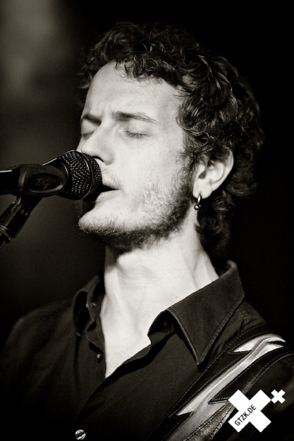
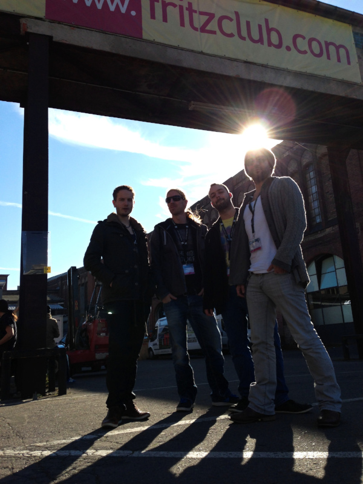
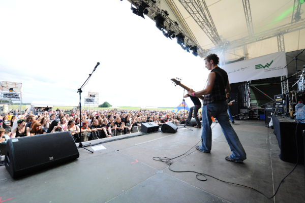
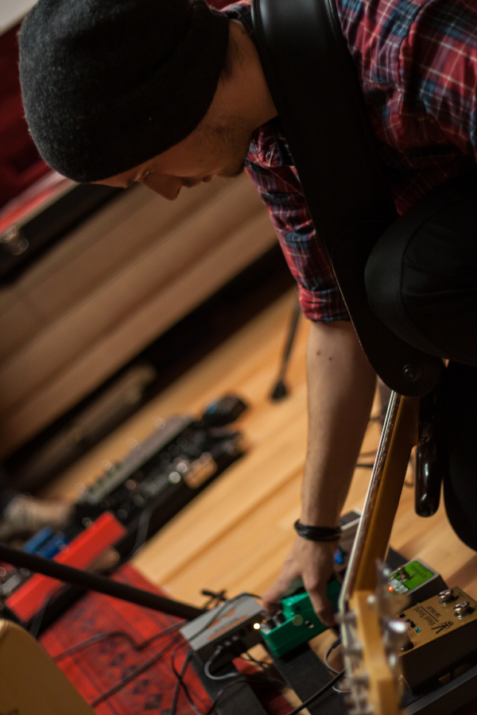
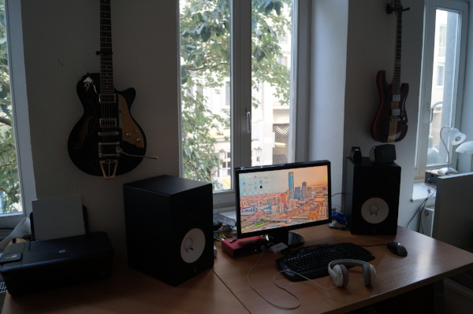
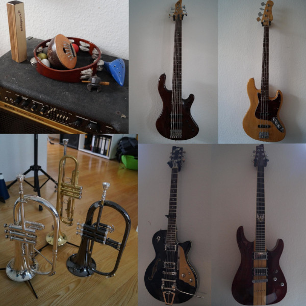
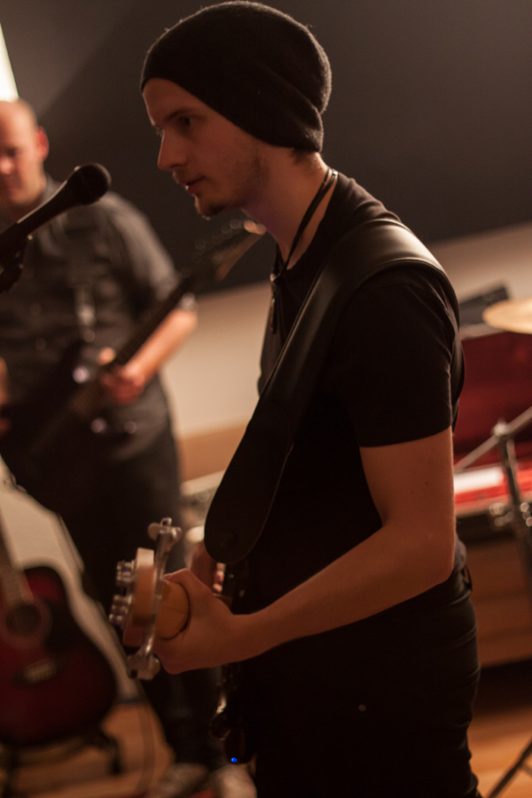

LMP Asks #20: An interview with Marius Stärk

This month LMP Asks talks to Marius Stärk, Linux enthusiast and musician who produces all his music with FLOSS tools.
Hi Marius, thank you for taking the time to do this interview. Where do you live, and what do you do for a living?
My name is Marius Stärk, I'm 28 years old and I live in the city of Aachen, a medium-sized city at Germany's western border, adjacent to Belgium and the Netherlands.
I studied Computer Engineering at the RWTH Aachen University, then got a job in Cologne working as a software developer in the broadcast industry. I quit that after a couple of years and now I'm working in Aachen again, as a research assistant and PhD student at the Institute for Automotive Engineering (ika). I'm working on different software projects there, including autonomous driving. It's a very exciting time to be involved in the development of the cars of the future.
What is your musical background?
My father, uncle, cousin and grandfather are members of a local big band. When I was seven my father took me to one of their open house days and I was eager to start playing the trumpet. I got lessons and joined them when I was 13. I'm still with them and a year ago became second musical director.
Playing trumpet at a gig with the Big Band Nütheim-Schleckheim in Koblenz, Germany.
At the age of 16 I had problems with my wisdom teeth and couldn't play the trumpet anymore. A friend of mine, Hendrik, the guitarist of "Syranic", convinced me into learning the bass guitar so we could form a rock band.
After a couple of band projects with different people I ended up in the rock band "Pencilcase", which some people might know from the soundtrack of the computer game "Crashday". I'm playing the bass on the last album called "Kansas City Shuffle", which I also wrote a couple of songs for. We even recorded a music video for the title track, directed and produced by Jakob Reuter.

The "Kansas City Shuffle"-era line-up of Pencilcase.

Playing bass at a festival gig with Pencilcase.
Since Pencilcase has become mostly inactive I started producing and releasing my own music. I had been using Linux as my main operating system for quite some time so I took a look at what music production software was available for it. I found Ardour and was hooked immediately.
What is your history with Linux and how did you find transitioning to it for audio production?
I started using Linux in my first semester of university. We were assigned programming tasks and the tutor was doing it in Linux. I was curious and installed it on my machine.
Since then I've always had, in addition to Windows, some Linux flavour on my computer. I did not abandon Windows because often I need to develop for it and there are certain programs I'm still using, e.g. the official German tax filing program "ElsterFormular".
I used to record rock song demos with Cubase on Windows, but I never tried to achieve high levels of sound quality back then. Those demos were mostly made to be used as guides for the other band members.
At some point in early 2015 I decided that I want to start producing my own songs and release them myself. Since I love Linux and it always bugged me to boot into Windows when I wanted to record some music, I was eager to give audio production on Linux a try.
I heard of Ardour before, so I installed it without looking for any alternatives. I quickly realized that Ardour is a professional and high-quality piece of software. Lately, many people recommended Harrison Mixbus to me, which is based on Ardour and has analog mixing console modelling built-in. I might try that for future productions.
The first plugins I encountered where the ones I found browsing the UbuntuStudio repositories. That's how I learned about the Calf suite for example. It is what I use for almost all basic audio enhancement. I'm not at all reluctant to try other plugins, but I don't specifically enjoy it and I rather use my limited time to actually create music

In general I try to avoid stacking lots and lots of plugins to achieve a specific sound. My philosophy is that if your instrument needs that much modification you should try to enhance your base sound. Most plugin work I do on audio tracks is compression, broadband EQing and reverberation. Sometimes I use the Tape Simulator to add some grain and overtones. I recently use more Multiband Compressors instead of regular ones on single tracks to enhance loudness. That's a nice way to fatten a bass drum for example. I seldom use modulators or stereo modifiers and I don't use pitch correction at all. I rather record hundreds of takes until I get it right.
I always liked the GuitarRig and SuperiorDrummer VST plugins and I wanted to have similar functionality on Linux. Guitarix and DrumGizmo are basically the first suites you encounter in a Google search query for LV2 alternatives for those plugins. Thus I tried them and stuck with them up until now. I found Guitarix and DrumGizmo appropriate for what I'm doing.
I would love to see a preset library project for all kinds of audio plugins. Maybe just a git repository to which users can push their own presets. Maybe there's something like this already out there and I missed it. I would love to use that and contribute.
What is your typical workflow when making music?
I use almost exclusively Ardour for song writing and production. I usually come up with some riff or melody on the guitar or keyboard and record a rough track of that.
I record further instruments and program some synths and drums until I have something resembling a verse or chorus. Then I try to come up with a fitting counter-part to that.
I usually don't record vocals or even write lyrics until I'm done with the complete song structure, mostly because I'm more creative with respect to music than lyrics. I need a lot of time to write good lyrics.
Tell us a bit about your hardware set up
I think my computer is moderately equipped. I use a couple of years old, overclocked (3300 MHz) AMD Phenom(tm) II X4 955 quadcore processor and 6 GB of descent RAM. It has no problems with medium-sized projects with sampled drums so there's no need for me to upgrade at the moment. I have an SSD but I only use it for the operating system and record to an HDD, which suffices for my needs.

Marius' production setup. Yamaha HS 8 speakers and a Scarlett 2i4 USB interface.
My recording interface is a Focusrite Scarlett 2i4. Mine has some problems with loose connections so I can't recommend it personally. I also have a Behringer FCA1616 8-channel interface which seems to work well so far. My master keyboard is a small M-Audio Keystation Mini 32. To record vocals and percussion I have a Neumann TLM102 condenser microphone. I also have a cheap condenser, which doesn't sound much worse.
Furthermore, I've got a couple of instruments:
- Guitars: A Duesenberg Starplayer TV and a Schecter Hollywood.
- Basses: A Christof Kost 6-String bass and cheap jazz bass copy, which I equipped with Fender Custom Jazz pickups.
- Brass: A Yamaha trumpet, a black Thomann flugelhorn and a Wilson flugelhorn.
- Also lots of percussion and an ocarina, which I can barely but always wanted to possess ;-)

Can't stop collecting instruments!
Why do you feel open source is important, and what for you is the most important aspect of Linux audio?
One of the greatest aspects of open source projects is that anyone can become actively involved in the development and add features or fix bugs. It often takes software companies several months or years to implement issues that are important to only a small group of people. With open source you can just go ahead and implement it yourself. It's also often more secure because open source software can't rely on security through obfuscation.
On the other hand, it were hypocritical, if I'd say that proprietary software is always bad, considering the fact that I earn my salary writing such. That's also why I don't mind paying for good software. I actually think we have a good balance of proprietary and open source development today.
What do you feel is currently lacking in Linux audio?
I would love to see more softsynths / virtual instruments and preset bundles for them. I'm almost exclusively using MDA ePiano and Calf Organ at the moment. I'd also love to see some ports of proprietary plugins.

What is your favourite FLOSS plugin?
The whole Calf Suite is awesome! They feel and sound professional and also have a fancy design. I also like the Guitarix suite, DrumGizmo and Barry's Satan Maximizer.
Are there any FLOSS projects that you are excited about at the moment?
I recently learned about Farmbot, a CNC farming robot system, however it is way above my budget and would take up too much space, but it's an interesting concept.
I also like the Bitcoin project, because it's so different from our standard monetary systems.
What changes, if any, would you like to see within the Linux Audio community?
The Linux audio community is great. Whenever I go on a forum, IRC channel or Facebook group, people are kind and willing to help with any type of problems.
I would like to see the community grow bigger. More users will motivate more developers to bring their products to Linux.
What advice would you give to a new Linux Audio user?
As I said before, the Linux audio community is great. If you're stuck, your first instinct should become to go on a forum, IRC or similar and ask for help.
Also don't get discouraged by software complexity. Audio production software is complex and complicated because it has to do a lot of stuff. However, you will soon realize that you rarely need the majority of these features.